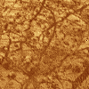
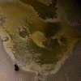
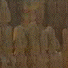
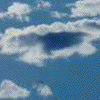
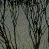
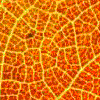
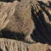

|  |  | ||
| Europa | Io | Jupiter | Stalagmite |
|  |  |  |
 |
| Bryce Canyon | Clouds | Fern | Tree |
|  |  | ||
| Leaf veins | Lightning | Cauliflowers | Mountains |
| Here are a few samples collected from the web, and from clipart CDs. None of these was labeled as a fractal in its source, rather these are examples of discovered fractals. Can you find fractal aspects of these pictures? Click on each small picture to open a larger version in a new window. | ||||||||||||||||||||||||
|
Return to Nature and Fractals.